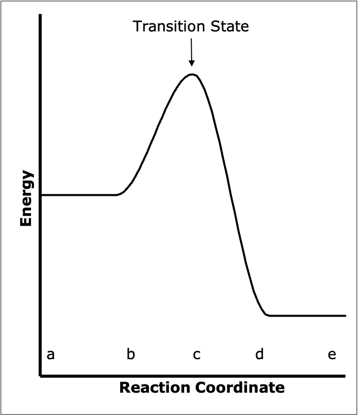

Appendix F — Transition State Theory
Because elementary reactions are exact descriptions of a single molecular event, it is possible to develop theories for how they occur. In this appendix, a theory for the rates of elementary reactions known as transition state theory will be presented. It is based upon the concept of an activated complex that is in a kind of equilibrium with the reactants. Appendix E presents an alternative theory known as collision theory.
F.1 Potential Energy Surface for a Reaction
There are several ways to develop the transition state theory. Some use classical thermodynamics and some use statistical mechanics. Here the theory will be developed in the context of the hypothetical reaction between an AB molecule and a C atom, Equation F.1.
\[ AB + C \rightarrow A + BC \tag{F.1}\]
There are three atoms involved in reaction F.1. Consider a system in space consisting of these three atoms. Each of the atoms may be located anywhere within the system. The arrangement of these three atoms in space can be specified using nine coordinates, namely the \(x\), \(y\), and \(z\) coordinates of each atom’s center. Quantum chemistry could be used to calculate the energy, \(\Phi\), of the system for all possible combinations of these nine coordinates. The energy could then be plotted as a function of the nine coordinates yielding a ten-dimensional potential energy surface.
Most people can’t visualize a ten dimensional surface. Therefore consider an approximate three dimensional system where the centers of mass of all three atoms are constrained to lie on a common straight line, where the C atom is fixed at the origin, and where the C atom is not between the other two atoms. As shown in Figure F.1, the geometry of this simplified system can be completely defined by two coordinates: the distance between the centers of the A and B atoms, \(D_{AB}\), and the distance between the centers of the B and C atoms, \(D_{BC}\). The energy for this simplified system can be represented as a three-dimensional surface.

Figure F.2 is an example of how this potential energy surface might appear. It can be seen that there are valleys or wells on the surface. (The same would be true of the ten-dimensional potential surface originally considered.) Wells that are relatively deep represent geometric arrangements where stable compounds have formed. Figure F.2 indicates two such wells. For one well in Figure F.2 the \(D_{AB}\) distance is small and constant whereas the \(D_{BC}\) distance can take on any large value. This well corresponds to the existence of an AB molecule and a separate C atom. The other well in Figure F.2 corresponds to the existence of a BC molecule and a separate A atom; \(D_{BC}\) is small and constant (equal to the bond length), and \(D_{AB}\) can take on any large value.

Figure F.2 also shows a path (a-b-c-d-e) between the two potential wells. This path crosses over the smallest barrier separating the two wells. For the reaction as written in Equation F.1, the starting point, a, is the well corresponding to an AB molecule and a separate C atom. Assume the reaction takes place with the three atoms constrained to remain collinear, with the C atom fixed at the origin, and with the C atom not between the other two atoms. Then as the reaction takes place the system traces out the path a-b-c-d-e shown in Figure F.2. The difference in energy between the bottom of the well where the system started (point a) and the highest point on the path (point c) is the activation energy for the reaction. Notice that as the system passes over the barrier, \(D_{AB}\) increases (the AB bond breaks) and \(D_{BC}\) begins to approach the normal BC bond length.
Thus, if it is assumed that the lowest energy path is followed, the potential surface can be used to determine that path. Each point on the path completely specifies the orientation of the entire system. Once this path has been determined, the potential energy diagram can be reduced from however many dimensions it originally had to a two dimensional plot. The abscissa of the plot is the distance along the path that has been determined from the full potential surface, and the ordinate is the potential energy of the system at that distance along the path. The distance along the identified path is often referred to as the reaction coordinate. Figure F.3 shows this kind of two-dimensional potential energy diagram. The diagram in Figure F.3 corresponds to Figure F.2; the points a through e on the two diagrams also correspond.
The state of the system when it is at the highest point in Figure F.3 is known as the transition state. Recall that each point on the path corresponds to a specific arrangement of the atoms. At the top of the activation barrier (i. e. in the transition state) all the atoms are in close proximity. The distances \(D_{AB}\) and \(D_{BC}\) are different than they would be in either stable molecule. The species formed from the three atoms when they are in the orientation corresponding to the transition state is called the activated complex. The activated complex is neither reactants nor products; it is a hybrid of the two. To recap, the entity at the top of the activation barrier is called the activated complex and it is said to be in the transition state.

The activated complex is not a stable chemical species. It is a species in transition, and its lifetime is exceedingly short. Nonetheless, in transition state theory, it is assumed that the activated complex can be treated like a stable chemical species. Specifically, it is assumed that the activated complex can be assigned thermodynamic properties like any stable species. These thermodynamic properties can be estimated using the same techniques that are used to estimate the thermodynamic properties of stable species.
The most important assumption of transition state theory is that the reactants are in a special kind of equilibrium with those activated complexes that are in the process of transforming from reactants into products. (The reactants are only in equilibrium with those activated complexes that are in the process of becoming products and not with those that are in the process of becoming reactants.) One consequence of this is that the theory will only apply when the reactant molecules are present in a Boltzmann distribution. If the reaction process is so fast that the distribution of reactant molecules deviates from the Boltzmann distribution, the transition state theory cannot be used. Fortunately this situation is infrequently encountered.
The rationale for assuming that “forward moving” activated complexes are in equilibrium with the reactants begins by considering the situation where the chemical reaction has reached thermodynamic equilibrium. At this point the net rate of reaction equals zero, but there is still a significant absolute rate in the forward direction and an equal absolute rate in the reverse direction. Thus, at overall equilibrium the reactants are in equilibrium with the forward moving activated complexes, the products are in equilibrium with the “backward moving” activated complexes, and the number of forward moving activated complexes must just equal the number of backward moving activated complexes. Now suppose that by some unspecified means, all product molecules are instantaneously removed, and thereby the overall reaction is no longer at equilibrium. Since the products have all been removed, the absolute rate in the reverse direction will be zero, but there is no reason why the number of forward moving activated complexes should change. This thought experiment justifies the assumption that the reactants are always in a special kind of equilibrium with those activated complexes which are in the process of becoming products. If this was not true, then the rate coefficient would change as the reaction approached equilibrium. Such a change in the rate coefficient has not been observed experimentally.
Returning to Figure F.3, the absolute rate of reaction in the forward direction is seen to be equal to the number of times activated complexes pass over the potential barrier from the reactant well to the product well. This, in turn, depends upon two factors: how many forward-moving activated complexes are present at a given time, and how fast do they proceed along the reaction coordinate. The first factor is determined using the assumptions just described. It is assumed that the reactants are in equilibrium with those activated complexes in the process of moving across the potential barrier in the forward direction. For the reaction as written in Equation F.2, this can be expressed using an equilibrium constant as shown in equation Equation F.3. The latter equation can be rearranged to give an expression for the concentration of the activated complexes, Equation F.4. In Equations F.3 and F.4 \(C_i\) denotes molar concentration of \(i\), \(K^\ddagger\) is a concentration-based equilibrium constant for reaction F.2, and the superscripted symbol, \(\ddagger\), is used to denote that a given quantity is associated with a forward moving activated complex which is proceeding along the reaction coordinate.
\[ AB + C \rightleftarrows ABC^\ddagger \tag{F.2}\]
\[ K^\ddagger = \frac{C_{\text{ABC}^\ddagger}}{C_{\text{AB}}C_{\text{C}}} \tag{F.3}\]
\[ C_{\text{ABC}^\ddagger} = K^\ddagger C_{\text{AB}}C_{\text{C}} \tag{F.4}\]
Equation F.4 gives the number of moles of activated complexes in a unit volume. All that remains is to determine how rapidly each of these complexes travels along the reaction coordinate. In principle it would be possible to determine how rapidly the activated complex moves along the reaction coordinate using the original Cartesian coordinate system. Thus, progress along the reaction coordinate could be expressed in terms of the \(x\), \(y\), and \(z\) components of velocity of each of the three atoms in the activated complex. This would be very cumbersome because motion along the reaction coordinate involves simultaneous changes of all nine of the coordinates.
It is easier (and customary) to use a different set of coordinates to describe the motion along the reaction coordinate. This does not change the potential surface in any way, it just changes the ease with which motion upon it can be described. (It is possible to describe a sphere using rectangular, cylindrical, or spherical coordinates. The sphere is the same in all three cases, but the equations describing it are much simpler if spherical coordinates are used). Motion of the atoms making up the \(\text{ABC}^\ddagger\) activated complex as it moves along the reaction coordinate can then be described in terms of the following nine coordinates. Three coordinates correspond translational motion of the center of mass of the activated complex as a whole; one coordinate in each of the \(x\), \(y\), and \(z\) directions. For non-linear activated complexes, three additional coordinates describe the rotational motion of the whole complex about axes parallel to the \(x\), \(y\), and \(z\) directions. (If the activated complex is linear, only two coordinates are used; one each to describe the rotational motion about the two axes perpendicular to the centerline of the complex itself.) The remaining coordinates correspond to different vibrations within the activated complex. In general, if there are \(N\) atoms making up the activated complex the total number of coordinates is \(3N\). At first it may seem that little has been gained by changing coordinate systems. However, it will be reasoned in what follows that as the activated complex approaches the top of the activation barrier, moving along the reaction coordinate becomes equivalent to changing just one vibrational mode. Hence the reaction coordinate becomes associated with a single coordinate of the system.
Consider now the equilibrium constant, \(K^\ddagger\), in Equation F.4. Since it has been assumed that the activated complex can be treated as a stable species, this equilibrium constant can be analyzed from the viewpoint of statistical mechanics. For an ideal gas the equilibrium constant in terms of molar concentrations is given by Equation F.5.
\[ K^\ddagger = \frac{N_{Av}q_{\text{ABC}^\ddagger}}{q_{\text{AB}}q_{\text{C}}} \exp{\left(\frac{-\Delta E_0^0}{k_BT}\right)} \tag{F.5}\]
In Equation F.5, \(K^\ddagger\) is the equilibrium constant for reaction F.2 in terms of molar concentrations, \(q_i\) is the molecular partition function (omitting the electronic contribution) per unit volume for species \(i\), \(-\Delta E_0^0\) is the change in ground state electronic energy of the system when reaction F.2 takes place stoichiometrically at the absolute zero of temperature, \(k_B\) is the Boltzmann constant, \(T\) is the temperature, and a superscripted \(\ddagger\) is used to denote that a particular quantity involves a forward moving activated complex. (Note: Equation F.5 assumes that essentially all species are in their electronic ground state during reaction.)
According to statistical mechanics, the energy available to a system is distributed, or partitioned, among the different possible states of the system. The partition function, \(q_i\), is a measure of the availability of these states per unit volume. The partition function is made up of component terms for each different type of state available to the system, e. g. as given in Equation F.6, where \(q_{tr,i}\) is the partition function for the translational states of species \(i\), \(q_{rot,i}\) is the rotational partition function and \(q_{vib,i}\) is the vibrational partition function.
\[ q_i = q_{tr,i}q_{rot,i}q_{vib,i} \tag{F.6}\]
Each type of state may have more than one degree of freedom. For example, if \(\text{ABC}^\ddagger\) is a linear complex it will have three degrees of translational freedom, two degrees of rotational freedom, and four degrees of vibrational freedom. The partition functions for a certain type of motion can be broken down into terms for each of the available degrees of freedom. If \(\text{ABC}^\ddagger\) is a linear complex, then its vibrational partition function can be broken into four component terms as indicated in Equation F.7. In Equation F.7 the terms \(q_{v_1,i}\), \(q_{v_2,i}\), \(q_{v_3,i}\), and \(q_{v_4,i}\) are vibrational partition functions for each of the (in this case, four) vibrational degree of freedom of species \(i\). Equation F.8 is used to calculate the value of the partition function for any one particular vibrational degree of freedom of species \(i\). In Equation F.8 \(\nu _n\) is the characteristic vibrational frequency associated with the \(n^{\text{th}}\) degree of vibrational freedom and \(h\) is Planck’s constant.
\[ q_{vib,i}=q_{n_{v_1},i}q_{n_{v_2},i}q_{n_{v_3},i}q_{n_{v_4},i} \tag{F.7}\]
\[ q_{n_v,i} = \frac{1}{1 - \exp{\left( \frac{-h\nu_{n_v}}{k_BT} \right)}} \tag{F.8}\]
Using Equations F.6, F.7 and F.8 the partition function for the activated complex can be expanded as in Equation F.9, where \(N_{vib}\) is the number of vibrational degrees of freedom for the \(\text{ABC}^\ddagger\) activated complex.
\[ q_{\text{ABC}^\ddagger} = q_{tr,\text{ABC}^\ddagger}q_{rot,\text{ABC}^\ddagger}\left(\prod_{n_v} q_{v_n,\text{ABC}^\ddagger}\right) \tag{F.9}\]
In an activated complex there are bonds which are in the process of breaking and/or forming. One way to view such a process is as a stretching/compressing vibration along the bond(s) in question. Referring back to Figure F.1, one can imagine a kind of vibration where the central B atom moves back and forth horizontally while A and C remain relatively motionless. Clearly, at one end of this particular vibrational mode, the system would look more like AB + C, while at the other end of this mode it would look like A + BC. In other words, one half-cycle of this asymmetric stretching mode can easily be visualized as leading to the formation of a BC bond and the breaking of an AB bond. With this view, motion along the reaction coordinate in the vicinity of the transition state becomes equivalent to this one vibration. For present purposes this vibrational mode will be called the critical mode and its frequency will be denoted as \(\nu _c\).
Since the bond(s) in question are not completely formed and/or broken in the activated complex, they are expected to be quite weak. The vibrational frequency of a weak bond is low, and this allows the partition function of this one vibrational mode to be approximated using Equation F.10. The partition function for this one weak bond can then be factored out of the total partition function for the \(\text{ABC}^\ddagger\) activated complex, Equation F.9, resulting in Equation F.11.
\[ \displaystyle\lim_{\nu_c\to 0} \frac{1}{1 - \exp{\left( \frac{-h\nu_c}{k_BT} \right)}} = \frac{k_BT}{h\nu_c} \tag{F.10}\]
\[ q_{\text{ABC}^\ddagger} = q_{tr,\text{ABC}^\ddagger}q_{rot,\text{ABC}^\ddagger}\left(\prod_{n_v^\prime} q_{{n_v^\prime},\text{ABC}^\ddagger}\right)\frac{k_BT}{h\nu_c} \tag{F.11}\]
Notice particularly that the continuous product in Equation F.11 excludes the partition function that was factored out. In addition, the approximation given in Equation F.10 has been used for the partition function of the critical vibration. The part of the total partition function which remains after factoring out the term for the critical vibration is often denoted by the symbol \(q_{\ddagger}\), where the subscripted \(\ddagger\) denotes that one term has been factored out. This notation is formalized in Equation F.12.
\[ q_{\ddagger} = \frac{q_{\text{ABC}^\ddagger}}{\left(\frac{-h\nu_c}{k_BT}\right)}=q_{tr,\text{ABC}^\ddagger}q_{rot,\text{ABC}^\ddagger}\left(\prod_{n_v^\prime} q_{{n_v^\prime},\text{ABC}^\ddagger}\right) \tag{F.12}\]
Rearranging Equation F.12 gives Equation F.13, which can be substituted into Equation F.5 giving Equation F.14. After rearrangement, an expression for the critical vibrational frequency results, Equation F.15.
\[ q_{\text{ABC}^\ddagger} = q_{\ddagger}\frac{k_BT}{h\nu_c} \tag{F.13}\]
\[ K^\ddagger = \frac{N_{Av}q_{\ddagger}\frac{k_BT}{h\nu_c}}{q_{\text{AB}}q_{\text{C}}} \exp{\left(\frac{-\Delta E_0^0}{k_BT}\right)} \tag{F.14}\]
\[ \nu_c = \frac{N_{Av}q_{\ddagger}}{K^\ddagger q_{\text{AB}}q_{\text{C}}}\frac{k_BT}{h}\exp{\left(\frac{-\Delta E_0^0}{k_BT}\right)} \tag{F.15}\]
The final assumption needed to complete the analysis is that the frequency of the critical vibration will in fact equal the frequency at which the activated complexes are transformed into products. The assumption is that the first time the activated complex attempts to go through the asymmetric stretching vibration just described, the AB bond will break and the BC bond will form. As mentioned previously, the rate of the elementary reaction F.2 will be equal to the product of the concentration of forward-moving activated complexes and the frequency at which they decompose. This is expressed in Equation F.16, which makes use of this final assumption.
\[ r_{j,f}=C_{\text{ABC}^\ddagger} \nu_c \tag{F.16}\]
Equations F.4 and F.15 give expressions for the two terms on the right-hand side of Equation F.16. These can be substituted into Equation F.16 leading to Equation F.17 for the forward rate of the elementary reaction F.1. Equation F.17 has the form shown in Equation F.18, where the rate coefficient is given by Equation F.19 and the pre-exponential by Equation F.20. In contrast to the Arrhenius equation, the transition state theory pre-exponential factor is not constant. Temperature appears explicitly as well as in the total partition functions.
\[ r_{j,f}= \left(K^\ddagger C_{\text{AB}}C_{\text{C}}\right)\frac{N_{Av}q_{\ddagger}}{K^\ddagger q_{\text{AB}}q_{\text{C}}}\frac{k_BT}{h}\exp{\left(\frac{-\Delta E_{0,f}^0}{k_BT}\right)} \]
\[ r_{j,f}= \frac{N_{Av}q_{\ddagger}}{ q_{\text{AB}}q_{\text{C}}}\frac{k_BT}{h}\exp{\left(\frac{-\Delta E_{0,f}^0}{k_BT}\right)}C_{\text{AB}}C_{\text{C}} \tag{F.17}\]
\[ r_{j,f}=k_{j,f}C_{\text{AB}}C_{\text{C}} \tag{F.18}\]
\[ k_{j,f} = k_{0,j,f}\exp{\left(\frac{-\Delta E_{0,f}^0}{k_BT}\right)} \tag{F.19}\]
\[ k_{0,j,f} = \frac{N_{Av}q_{\ddagger}}{ q_{\text{AB}}q_{\text{C}}}\frac{k_BT}{h} \tag{F.20}\]
An analogous process can be used to generate an expression for the rate in the reverse direction, Equation F.21. The net rate of reaction then is simply the difference between the forward and reverse rates, Equation F.22. That expression can be generalized to other stoichiometries as shown in Equation F.23.
\[ r_{j,r}= k_{0,j,r}\exp{\left(\frac{-\Delta E_{0,r}^0}{k_BT}\right)}C_{\text{A}}C_{\text{BC}} \tag{F.21}\]
\[ r_j = k_{0,j,f}\exp{\left(\frac{-\Delta E_{0,f}^0}{k_BT}\right)}C_{\text{AB}}C_{\text{C}} - k_{0,j,r}\exp{\left(\frac{-\Delta E_{0,r}^0}{k_BT}\right)}C_{\text{A}}C_{\text{BC}} \tag{F.22}\]
\[ r_j = k_{j,f}\prod_{i_r} C_{i_r}^{-\nu_{i_r,j}} - k_{j,r}\prod_{i_p} C_{i_p}^{\nu_{i_p,j}} \tag{F.23}\]
Appendix E showed that the forward and reverse rate coefficients are related to the equilibrium constant, and that as a consequence, the net rate can be written in terms of the forward rate coefficient and the equilibrium constant. That appendix also showed how the ideal gas constant can be used to write the net rate expression in terms of partial pressures instead of concentrations. Both of those things apply to the net rate expression from transition state theory.
F.2 Shortcomings of Simple Transition State Theory
This simple formulation of transition state theory does have some shortcomings. It ignores the possibility of quantum mechanical tunneling through the barrier. Tunneling does not affect the rate coefficient for the vast majority of chemical reactions; it is most important when light elements are involved. A transmission coefficient can be added to account for tunneling in a manner similar to the way the steric factor accounts for orientation effects in simple collision theory.
The assumption that all modes remain in thermodynamic equilibrium is the source for another shortcoming. Reaction typically takes place within 10-12 s, and that is often not enough time for all modes of motion to reach equilibrium; the treatment given here ignores the dynamics of moving energy into the forming bond and into the leaving entity.
A third shortcoming of simple transition state theory is that it assumes all reaction events pass through the saddle point. That is, it assumes the reaction coordinate for every reaction event passes over the lowest barrier separating the two wells in Figure F.2. Experimental and computational studies indicate that many times, the reacting molecules follow a reaction coordinate that passes over the barrier at a location other than the saddle point.
F.3 Symbols Used in this Appendix
| Symbol | Meaning |
|---|---|
| \(h\) | Planck’s constant. |
| \(i\) | As subscript denotes one specific reagent present in the system. As a summation or continuous product index, indexes all reagents present in the system |
| \(i_p\) | As a subscript, denotes a specific reagent that is a product in the reaction under consideration. As a summation or continuous product index, indexes all reagents present in the system that are products in the reaction under consideration. |
| \(i_r\) | As a subscript, denotes a specific reagent that is a reactant in the reaction under consideration. As a summation or continuous product index, indexes all reagents present in the system that are reactants in the reaction under consideration. |
| \(j\) | subscript denoting one particular reaction occurring in the system. |
| \(k_B\) | Boltzmann constant. |
| \(k_j\) | Rate coefficient for reaction \(j\); an additional subscripted \(f\) indicates the forward rate and \(r\), the reverse rate. |
| \(k_{0,j}\) | Pre-exponential factor for reaction \(j\); an additional subscripted \(f\) indicates the forward rate and \(r\), the reverse rate. |
| \(n_v\) | As a subscript, denotes one of the vibrational modes of the species under consideration. As a summation or continuous product index, indexes all of the vibrational modes of the species under consideration. |
| \(n_v^\prime\) | As a subscript, denotes one of the vibrational modes of the species under consideration other than the critical mode. As a summation or continuous product index, indexes all of the vibrational modes of the species under consideration except the critial mode. |
| \(q_i\) | Molecular partition function for reagent \(i\) per unit volume. |
| \(q_{rot,i}\) | Rotational partition function for reagent \(i\) per unit volume. |
| \(q_{tr,i}\) | Translational partition function for reagent \(i\) per unit volume. |
| \(q_{vib,i}\) | Vibrational partition function for reagent \(i\) per unit volume. |
| \(q_{n_v,i}\) | Partition function for vibrational degree of freedom \(n\) for reagent \(i\) per unit volume. |
| \(q_{\ddagger}\) | Partition function with critical vibrational mode factored out. |
| \(r_j\) | Rate of reaction \(j\); an additional subscripted \(f\) indicates the forward rate and \(r\), the reverse rate. |
| \(x\) | Cartesian spatial coordinate. |
| \(y\) | Cartesian spatial coordinate. |
| \(z\) | Cartesian spatial coordinate. |
| \(C_i\) | Molar concentration of reagent \(i\). |
| \(D_{XY}\) | Distance between atoms X and Y. |
| \(K^\ddagger\) | Concentration-based equilibrium constant for the reaction that forms an activated complex. |
| \(K_{j,eq_c}\) | Concentration-based equilibrium constant for reaction \(j\). |
| \(N_{Av}\) | Avodagro’s number. |
| \(N_{vib}\) | Number of vibrational degrees of freedom. |
| \(T\) | Temperature. |
| \(\nu _c\) | Frequency associated with the critical vibrational mode. |
| \(\nu _{i,j}\) | Stoichiometric coefficient of reagent \(i\) in reaction \(j\). |
| \(\nu _n\) | Characteristic vibrational frequency associated with vibrational degree of freedom \(n\). |
| \(-\Delta E_0^0\) | Change in ground state electronic energy of the system when reaction F.2 takes place at 0 K; an additional subscripted \(f\) indicates the forward reaction and \(r\), the reverse reaction. |
| \(\Phi\) | Quantum mechanical total energy. |